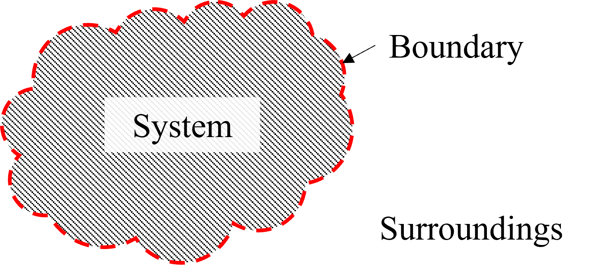
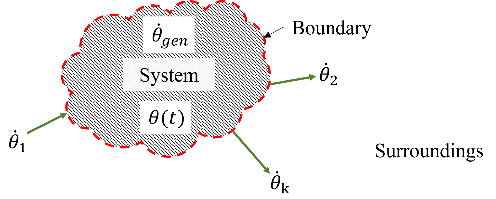

Macroscopic Balance Expressions#
Topics Covered#
System Definition
Balance Expressions
Supplemental Reading#
links to OER relevant to this topic.
System Definition#
In prior classes, you have learned to think about material and energy flows into and out of physical plants. You perhaps even learned how to define a system by drawing a boundary around an area that you want to analyze and track the rate at which mass and energy flow into and out of the system. The utilization of material balance expressions is increadibly important to the topic of thermodynamics and we revisit it now. Before we do, we need two more definitions.
Systems:
Pathways:
System#
A system is a region of interest that is distinguished from its surroundings by a boundary (red dashed line) that divides a region of space from its surroundings as depicted in Figure 1.
Fig.1 - General definition of a system where a red, dashed boundary line divides the system from its surroundings.
System: The region of space that we are interested in quantifying.
Surroundings: All space outside of our system.
Boundary: The dividing line between the system and its surroundings.
Mass and energy flow into and out of the system by crossing the boundary from/to the surroundings.
Pathways#
A consequence of the flow of mass and energy into and out of a system is that the state of the system can change over time. How the state of the system changes in time is called the pathway and the path defines the physical, chemical, and thermal processes that the system is subjected to elicit a change of state. There are many different pathways that we will define in thermodynamics, but some important ones that we will use frequently are:
isothermal pathways - constant temperature
isobaric pathways - constant pressure
isometric pathways - constant volume
isentropic pathways - constant entropy
isenthalpic pathways - constant enthalpy
An important characteristics that we will see is that these pathways emerge as a natural consequences of the design of physical process that change the state of a material.
Macroscopic Balance Expressions#
We seek an expression for the change of \(\theta\) as we take a path from state point (1) to state point (2):
Differential vs. the Difference Form:#
Before we begin, a reminder of some math definitions:
The rate of change of a property \(\theta\) with respect to time is given by the time-derivative, which in its differential form is given as:
If we integrate \(\dfrac{d\theta(t)}{dt}\), from (1) to (2) over a time interval \(t_1\) to \(t_2\), the total change in \(\theta\) within the system over that time interval is given as
Derivation of a Macroscopic Balance Expression:#
Now we return to the system definition to develop the appropriate balance equations as depicted in Figure 1. We envision some amount of \(\theta\) crossing the boundary as depicted below:
General definition of a system where a red, dashed boundary line divides the system from its surroundings. Within this system, we are tracking some extrinsic property, \(\theta\), as a function of time.
Note \(\theta\) can be consumed or generated within the system and pass across the system boundaries at a finite rate.
We now write with the differential form of the balance expression:
We now write with the difference form of the balance expression: